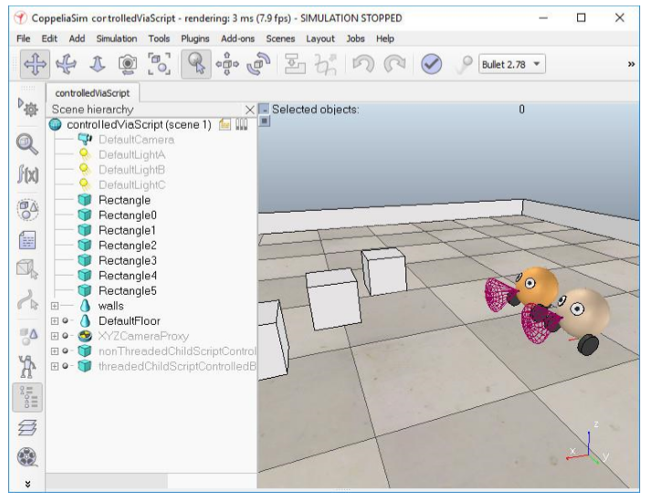

refer ebook <<
Previous Next >> BubbleRob
External controller
本資料由40723240提供
External controller tutorial
外部控制器教程
There are several ways one can control a robot or simulation in CoppeliaSim:
在 CoppeliaSim 中，有幾種方法可以控制機器人或使其模擬更加仿真：
The most convenient way is to write a child script that will handle the behaviour of a given robot or model. It is the most convenient way, because child scripts are directly attached to scene objects, they will be duplicated together with their associated scene objects, they do not need any compilation with an external tool, they can run in threaded or non-threaded mode, they can be extended via custom Lua function or via a Lua extension library. Another major advantage in using child scripts: there is no communication lag as with the last 3 methods mentioned in this section (i.e. the regular API is used), and child scripts are part of the application main thread (inherent synchronous operation). There are several drawback to writing scripts however: you don't have the choice of the programming language, you can't have the fastest code, and you can't directly access external function libraries, except the Lua extension libraries.
最方便的方法是編寫一段指令來處理給定機器人或模型的動作。這
是最方便的方法，因為指令直接附加到物件上，它們將與相關的物
件一起復制，它們不需要使用外部工具進行任何編譯，它們可以在
線性或非線性模式下運行，它們可以通過自定義 Lua 函數或 Lua 擴
展庫進行擴展。使用指令的另一個主要優點是：與本節中提到的後
3 種方法（即使用常規 API）一樣，沒有通信延遲，並且指令是應用
程序主線程的一部分（固有的同步操作）。但是，編寫指令有幾個缺
點：您無法選擇編程語言，不能擁有最快的代碼，並且除了 Lua 擴
展庫之外，您無法直接訪問外部函數庫。
Another way one can control a robot or a simulation is by writing a plugin. The plugin mechanism allows for callback mechanisms, custom Lua function registration, and of course access to external function libraries. A plugin is often used in conjunction with child scripts (e.g. the plugin registers custom Lua functions, that, when called from a child script, will call back a specific plugin function). A major advantage in using plugins is also that there is no communication lag as with the last 3 methods mentioned in this section (i.e. the regular API is used), and that a plugin is part of the application main thread (inherent synchronous operation). The drawbacks with plugins are: they are more complicated to program, and they need to be compiled with an external too. Refer also to the plugin tutorial.
可以控制機器人或模擬的另一種方法是編寫插件。插件機制允許使
用回調機制，自定義 Lua 函數註冊，當然還可以訪問外部函數庫。
插件通常與指令結合使用（例如，插件註冊自定義的 Lua 函數，當
從指令中調用時，該 Lua 函數將回調特定的插件函數）。使用插件的
主要優勢還在於，與本節中提到的後 3 種方法（即使用常規 API）一
樣，沒有通信延遲，並且插件是應用程序主線程的一部分（固有的
同步操作）。插件的缺點是：它們的編程更加複雜，並且也需要使用
外部編譯。另請參閱插件教程。
A third and forth way one can control a robot or a simulation is by
writing an external client application that relies on the remote API. This is a very convenient and easy way, if you need to run the control code from an external application, from a robot or from another computer. This also allows you to control a simulation or a model (e.g. a virtual robot) with the exact same code as the one that runs the real robot. The remote API comes in two versions: the B0-based remote API, and the legacy remote API.
控制機器人或模擬的第三種方法是編寫依賴於遠程 API 的外部客戶
端應用程序。如果您需要從外部應用程序，機器人或另一台電腦運
行控制代碼，這是一種非常便捷的方法。這也使您可以使用與運行
真實機器人完全相同的代碼來控制仿真機器人或模型（例如虛擬機
器人）。遠程 API 有兩個版本：基於 B0 的遠程 API 和舊版遠程 API。
A fifth way to control a robot or a simulation is via a ROS node. In a similar way as the remote API, ROS is a convenient way to have several distributed processes communicate with each other. While the remote API is very lightweight and fast, it allows only communication with CoppeliaSim. ROS on the other hand allows connecting virtually any number of processes with each other, and a large amount of compatible libraries are available. It is however heavier and more complicated than the remote API. Refer to the ROS interfaces for details.
控制機器人或仿真的第五種方法是通過 ROS 節點。 ROS 與遠程 API
相似，是使多個分佈式進程相互通信的便捷方法。儘管遠程 API 非
常輕巧且快速，但它僅允許與 CoppeliaSim 通信。另一方面，ROS 允
許幾乎將任意數量的進程相互連接，並且提供了大量兼容的庫。但
是，它比遠程 API 多並且更複雜。有關詳細信息，請參閱 ROS 接
口。
A sixth way to control a robot or a simulation is via a BlueZero (BØ) node. In a similar way as ROS, BlueZero is a convenient way to have several distributed processes communicate with each other, and is a lightweight and cross-platform solution. Refer to the BlueZero interface for details.
控制機器人或模擬的第六種方法是通過 BlueZero（BØ）節點。與
ROS 類似，BlueZero 是使多個分佈式進程相互通信的一種便捷方
法，並且是一種輕量的跨平台解決方案。有關詳細信息，請參考
BlueZero 界面。
A seventh way to control a robot or a simulation is by writing an external application that communicates via various means (e.g. pipes, sockets, serial port, etc.) with a CoppeliaSim plugin or CoppeliaSim script. Two major advantages are the choice of programming language, which can be just any language, and the flexibility. Here also, the control code can run on a robot, or a different computer. This way of controlling a simulation or a model is however more tedious that the methods with the remote API.
控制機器人或模擬的第七種方法是編寫一個外部應用程序，該應用
程序通過各種方式（例如管道，套接字，串行端口等）與
CoppeliaSim 插件或 CoppeliaSim 腳本進行通信。選擇編程語言（可
以是任何一種語言）和靈活性是兩個主要優點。同樣，控制代碼也
可以在機器人或其他電腦上運行。但是，與使用遠程 API 的方法相
比，這種控制仿真或模型的方法更加乏味。
There are 8 scene files related to this tutorial:
scenes/controlTypeExamples/controlledViaScript : one robot is controlled via a non-threaded child script, the other is controlled via a threaded child script. scenes/controlTypeExamples/controlledViaPlugin : the robot is controlled via a plugin. scenes/controlTypeExamples/controlledViaB0RemoteApi : the robot is controlled via the B0-based remote API. scenes/controlTypeExamples/controlledViaLegacyRemoteApi : the robot is controlled via the legacy remote API. scenes/controlTypeExamples/controlledViaB0 : the robot is controlled via the BlueZero interface. scenes/controlTypeExamples/con trolledViaRos : the robot is controlled via the ROS interface. scenes/controlTypeExamples/controlledViaRos2 : the robot is controlled via the ROS2 interface. scenes/controlTypeExamples/controlledViaTcp : the robot is controlled via LuaSocket and TCP.
有 8 個與本教程相關的場景文件： scenes / controlTypeExamples /受
控 ViaScript：一個機器人是通過非線程子腳本控制的，另一個是通過
線程子腳本控制的。 scenes / controlTypeExamples /受控ViaPlugin：機器人是通過插件控制的。 scenes / controlTypeExamples / controlViaB0RemoteApi：通過基於 B0 的遠程API 來控制機器人。 scenes / controlTypeExamples /受控
ViaLegacyRemoteApi：通過舊版遠程 API 控制機器人。 scenes /
controlTypeExamples / controlViaB0：通過 BlueZero 界面控制機器
人。 scenes / controlTypeExamples /受控 ViaRos：通過 ROS 接口控
制機器人。 scenes / controlTypeExamples / controlViaRos2：通過
ROS2 接口控制機器人。 scenes / controlTypeExamples /受控
ViaTcp：通過 LuaSocket 和 TCP 控制機器人。

In all 8 cases, child scripts are used, mainly to make the link with the outside world (e.g. launch the correct client application, and pass the correct object handles to it). There are two other ways one can control a robot, a simulation, or the simulator itself: by using customization scripts, or add-ons. They are however not recommended for control and should be rather used to handle functionality while simulation is not running.
As an example, the child script linked to the robot in scene controlledViaB0RemoteApi.ttt has following main task:
在所有 8 種情況下，都使用子腳本，主要是為了與外界建立鏈接
（例如，啟動正確的客戶端應用程序，並將正確的對象句柄傳遞給
它）。有兩種其他方法可以控制機器人，模擬或模擬器本身：使用自
定義腳本或附加組件。但是，不建議將它們用於控制，而應在不運
行模擬時將其用於處理功能。例如，鏈接到場景控制的
ViaB0RemoteApi.ttt 中的機器人的子腳本具有以下主要任務：
Launch the controller application (bubbleRobClient_b0RemoteApi) with some object handles as arguments. The server functionality of the B0-based remote API is provided by object b0RemoteApiServer .
As another example, the child script linked to the robot in scene controlledViaRos.ttt has following main tasks:
Check if the ROS Interface for CoppeliaSim was loaded Launch the controller application (rosBubbleRob) with some topic names or object handles as arguments
使用某些對象作為參數啟動控制器應用程序
（bubbleRobClient_b0RemoteApi）。基於對象 B0 的遠程 API 的服
務器功能由對象 b0RemoteApiServer 提供。作為另一個示例，鏈接
到場景控制的 ViaRos.ttt 中的機器人的子腳本具有以下主要任務：
檢查是否已加載 CoppeliaSim 的 ROS 接口使用某些主題名稱或對象
作為參數啟動控制器應用程序（rosBubbleRob）
Yet, as another example, the child script linked to the robot in scene controlledViaTcp.ttt has following main tasks:
Search for a free socket connection port
Launch the controller application (bubbleRobServer) with the chosen connection port as argument Locally connect to the controller application At each simulation pass, send the sensor values to the controller, and read the desired motor values from the controller At each simulation pass, apply the desired motor values to the robot's joints
Run the simulations, and copy-and-paste the robot: you will see that the duplicated robots will directly be operational, since their attached child scripts are in charge of launching new instances of their respective external applications, or calling the appropriate plugin functions.
然而，作為另一個示例，鏈接到場景控制的 ViaTcp.ttt 中的機器人的
子腳本具有以下主要任務：搜索空閒的套接字連接端口使用所選的
連接端口作為參數啟動控制器應用程序（bubbleRobServer）本地連
接到控制器應用程序在每次仿真過程中，將傳感器值發送到控制
器，並從控制器讀取所需的電機值在每次模擬過程中，將所需的電
機值應用於機器人的關節運行模擬，然後復制並粘貼機器人：您將
看到重複的機器人將直接運行，因為它們附加的子腳本負責啟動各
自外部應用程序的新實例或調用適當的插件功能。
refer ebook <<
Previous Next >> BubbleRob